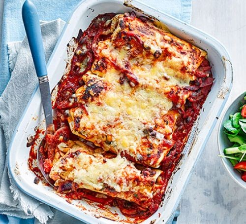

Enchilada Recipe

Description
A family dinner that delivers four of your 5-a-day - tender chicken, red pepper and black beans, wrapped in tortilla, baked in the oven with passata and cheese
Ingredients
- 1 tsp olive oil
- 2 onions
- 280g carrots
- 2-3 tsp chilli powder
- 2 tins chopped tomatoes
- 2 tins kidney beans
- 6 tortillas
- 200g natural yoghurt
- 50g grated cheese
- Heat the oil in a large frying pan. Cook the onions and carrots for 5-8 mins until soft – add a splash of water if they start to stick. Sprinkle in the chilli powder and cook for 1 min more. Pour in the tomatoes and pulses and bring to the boil. Turn down the heat and simmer for 5-10 mins, stirring occasionally, until thickened. Remove from the heat and season well.
- Heat grill to high. Spread a spoonful of the bean chilli over a large ovenproof dish. Lay each tortilla onto a board, fill with a few tbsp of chilli mixture, fold over the ends and roll up to seal. Place them into the ovenproof dish. Spoon the remaining chilli on top.
- Mix the yogurt and grated cheese together with some seasoning, and spoon over the enchiladas. Grill for a few mins until the top is golden and bubbling. Serve with a green salad.